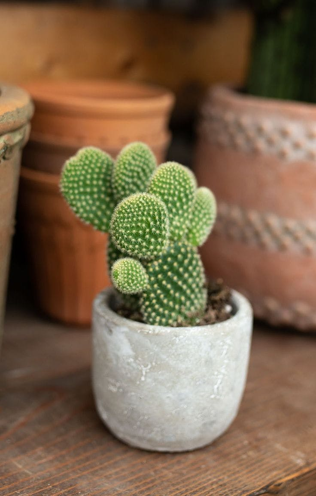

نبات صبار الالوفيرا Aloe vera ويسمى أيضا صبار الشعر. اسمه العلمي Aloe barbadensis. نبات عصاري (لحمي) من السهل تربيته ويصل في نموه إلى 45 سم تقريبًا، وينمو في المناطق الجافة بمعظم أنحاء العالم، أوراقه حادة الأطراف ويوجد منه عدة أنواع. يزرع النبات للتجميل في الحدائق الصخرية أو منفردًا.
تستعمل عصارته لمعالجة الحروق. خاصةً الحروق الناتجة من التعرض لأشعة الشمس لفترات طويلة. حيث يؤخذ قطعة منه وتكسر ويوضع السائل الناتج من مكان الكسر. على المنطقة المصابة فيخفف الألم بشكل كبير. ويزرع كذلك للاستفادة من سائله للعناية بالشعر.